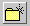

Use the Select Workfile Location dialog box (Actions | Check In | Check In From browse button) to select a temporary workfile location when checking in files. The directory you specify is in effect only for the items you are checking in; after you click OK, the directory defaults to the workfile location specified for the project.
| Look in |
Select a valid drive or path that contains the workfiles you want to check in. The contents of the drive or path you select appear below in the contents list. |
| Contents list |
Double-click to select a directory that contains the workfiles you want to check in. The list displays the directories in the drive or folder selected in the Look in field. Selecting a directory updates the Look in and Folder name fields to reflect the full path name of new location. |
| |
Opens the directory one level above the current level. This button is disabled if you are at the top level of a directory. |
|  |
Creates a new folder in the currently selected directory. You may rename the new folder using in-place editing. The following characters are not allowed in new folder names: \ / : * ? " < > | . |
| Folder name |
Use the Look in and Contents list fields to select and display a folder name or enter a path to the directory that contains the workfiles you want to check in. |